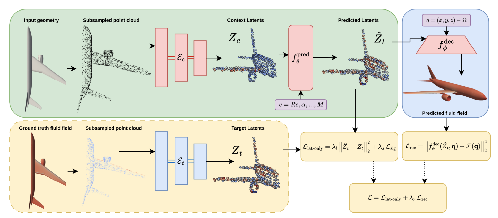
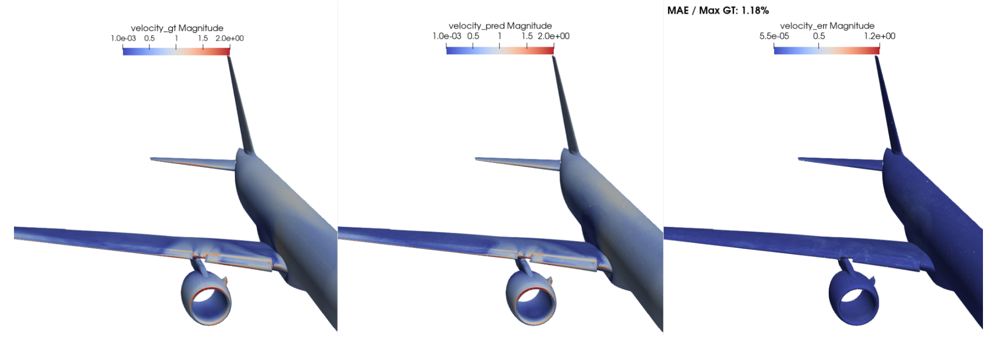
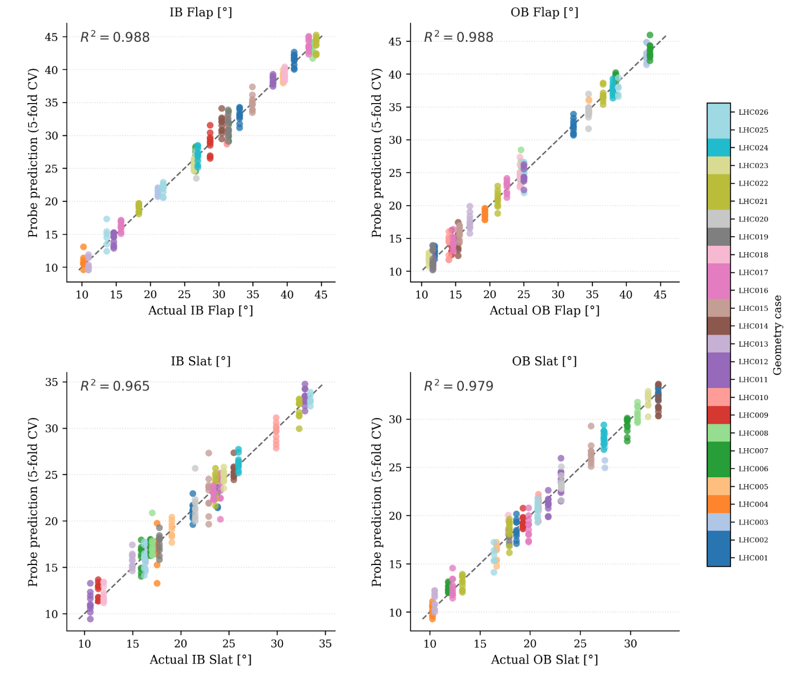
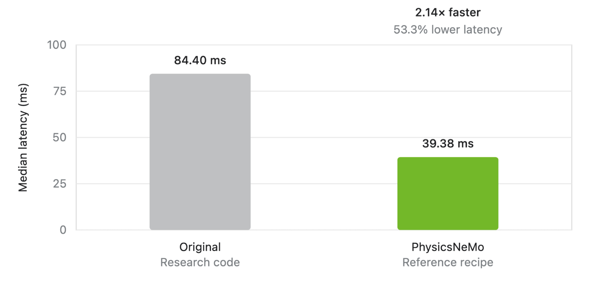

AeroJEPA: From Research to Enterprise Use
AI-enhanced simulation solutions now support high-fidelity computational fluid dynamics (CFD) simulations for aerodynamic design. Such solutions leverage AI surrogates trained on a corpus of simulated data, and several challenges remain before these solutions become more generalizable. Examples include the transferability of pretrained models, from cross-regime generalization to geometry and boundary condition generation, and the question of what constitutes a universal CFD input/output representation for training on diverse corpora of datasets.
One such challenge is an effective latent representation of the geometry and flow physics that can encode the physical variables. A “good” latent representation helps in scaling by compressing the data. It also preserves the structures that transfer across prediction tasks. For foundation models, this means capturing reusable concepts while filtering out incidental details such as resolution, mesh, or data format. A strong latent space improves sample efficiency, supports generalization to new domains, enables multiple input and output modalities, and makes downstream adaptation cheaper. If the latent space discards important information or encodes dataset-specific shortcuts, scaling the model or training data only reinforces those limitations.
AeroJEPA, introduced by Giral et al., takes on the challenge of creating a compact latent representation through predictive latent learning. The model is the result of a broad collaboration across universities in the US and Spain, led by Professor Ricardo Vinuesa’s group at the University of Michigan. Instead of predicting only a large flow field, it learns a compact representation of the flow that can be decoded when needed and used directly for downstream analysis. This post introduces the central idea behind AeroJEPA and highlights what the experiments show. It also describes how the researchers leveraged PhysicsNeMo and its open-source development to turn the research implementation into a scalable and optimized production workflow that other researchers and enterprises can train, evaluate, and customize.
How AeroJEPA Works
The authors developed AeroJEPA to make high-resolution aerodynamic prediction more practical while learning meaningful representations of both geometry and flow. It represents each geometry in latent space, predicts the corresponding flow representation, and optionally decodes that flow back into physical space.
Many aerodynamic surrogates predict the solution directly at every requested output point. This can work well at moderate resolution, but it becomes expensive when a realistic three-dimensional field contains tens of millions of points. AeroJEPA separates the prediction of the overall flow state from its spatial reconstruction. It predicts the compact representation once, then decodes that representation at the locations where field values are required.

{kind=link}
The Innovation: Predict in Latent Space
AeroJEPA adapts the Joint-Embedding Predictive Architecture (JEPA) paradigm to aerodynamic fields. A context encoder turns the geometry point cloud into a fixed set of tokens. During training, a target encoder does the same for the ground-truth flow. Conditioned on operating variables such as angle of attack, Reynolds number, or Mach number, a predictor learns to map the geometry representation to the corresponding flow representation. Inference does not need the target encoder.
When a physical field is required, an optional implicit neural representation (INR) decoder reconstructs pressure and velocity at arbitrary query locations. You can decode a complete field, focus on selected regions, or skip decoding for latent-space analysis. During training, complementary losses align the predicted and target representations, preserve field accuracy, and prevent the latent space from collapsing to an uninformative solution.
Read the AeroJEPA paper by Giral et al. for the full architecture, training objectives, datasets, and results.
What the Experiments Show
The paper evaluates AeroJEPA on two complementary datasets. HiLiftAeroML tests realistic high-lift configurations with approximately 15 million surface points and 50 million volume points. On the boundary-layer benchmark, AeroJEPA delivered competitive accuracy across pressure and all three velocity components, while training jointly for field reconstruction and a semantically meaningful latent space. It also had the lowest reported full-field inference cost in the evaluated setup: 57 TFLOPs, compared with approximately 88–309 TFLOPs for the baselines.

{kind=link}
The learned representation also captures information that never appeared as a direct training target. Simple linear probes recovered four high-lift control-surface deflections from the geometry representation with R² values from 0.965 to 0.988. The predicted flow representation yields lift and drag coefficients with R² values of 0.930 and 0.996, respectively. On the SuperWing dataset, the authors also demonstrated a proof-of-concept search for aerodynamic efficiency directly in latent space, without repeatedly decoding full fields or modifying computer-aided design (CAD) geometry inside the optimization loop.

{kind=link}
These results make AeroJEPA promising as more than a faster field surrogate. Its latent space could become a practical interface for interpolation, probing, concept arithmetic, and early-stage design exploration. The paper is careful about the boundary of that claim. The evaluations cover a limited set of geometries and mostly steady-flow regimes, and any engineering deployment would still require validation with high-fidelity simulation or experiments.
From Research to a Reusable Recipe
The collaboration with PhysicsNeMo open-source development enabled the research team to translate AeroJEPA’s core research design into a production-grade recipe by replacing one-off plumbing with reusable PhysicsNeMo modules. The context encoder, target encoder, latent predictor, and query-based decoder are separately configurable modules. So are the latent-matching, reconstruction, and SIGReg objectives. The recipe isolates dataset logic in a datapipe and Hydra configuration, so researchers can add a compatible dataset without changing the training or inference entry points. This level of modularity allows developers and other researchers to experiment with various combinations and further customize the recipe for their use case.
Because the recipe uses optimized PhysicsNeMo modules, it offers significant performance gains and scales to enterprise-grade data.
On a single NVIDIA H100, the optimized BF16 inference pipeline achieved a 2.14× speedup over the initial research code. The speedup came primarily from eliminating CPU-orchestrated geometry operations. The recipe uses PhysicsNeMo functional operations such as nearest-neighbor search for AeroJEPA’s iterative farthest-point sampler and reuses a static neighbor graph across each attention stack. Together, these changes reduce roughly 30 k-nearest neighbor (kNN) searches per inference to nine. Optimized PhysicsNeMo layers for Transformer Engine normalization provided additional acceleration. Crucially, the benchmark compared the same 9.14-million-parameter model at BF16 precision in both implementations, so the gain reflects implementation optimization rather than a smaller network or reduced numerical precision.
{kind=link}

Beyond the single-GPU inference speedup, the recipe uses PhysicsNeMo’s DistributedManager to scale training across multiple GPUs and multiple nodes. It can also distribute inference across test cases, making AeroJEPA practical for larger training jobs.
The AeroJEPA recipe runs the following checks:
- Evaluates pressure and skin-friction channels with relative L1 and L2 error, root mean square error (RMSE), and mean absolute error (MAE)
- Profiles per-geometry inference cost
- Integrates the decoded surface field to estimate lift, drag, and moment coefficients
Together, these checks connect model accuracy to quantities engineers use.
The AeroJEPA recipe has both tutorial-scale and paper-scale configurations. They give researchers an open implementation to inspect and extend, while the paper-scale recipe enables application developers to evaluate on real-world-scale data. On the SuperWing dataset, the paper-scale configuration reports relative L2 errors of 0.0491 for tangential skin friction, 0.1086 for spanwise skin friction, and 0.0595 for pressure coefficient. These results closely replicate those from the paper.
This recipe continues to evolve in collaboration with the researchers. Future directions include expanding coverage with broader geometry families, unsteady and multi-fidelity regimes, uncertainty estimation, physics-aware stress tests, and tighter constrained optimization loops.
Getting Started
Get started with this new architecture by running the AeroJEPA tutorial recipe, which uses the SuperWing dataset and covers data download, training, inference, field metrics, inference-cost profiling, and integrated force estimation.
- Set up the recipe. Install PhysicsNeMo, open the AeroJEPA example directory, and install the recipe requirements.
- Download the data. Use the bundled downloader to fetch the required SuperWing files from Hugging Face.
- Train and evaluate. Start with the tutorial configuration, then run inference and the metric and force postprocessing utilities on the held-out split.
- Scale or extend. Switch to the paper-scale configuration for distributed training, or add a datapipe and Hydra data configuration for a new dataset.